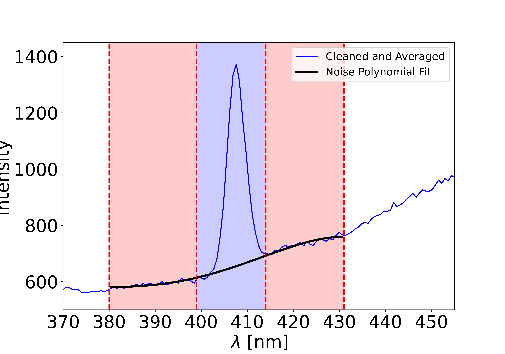
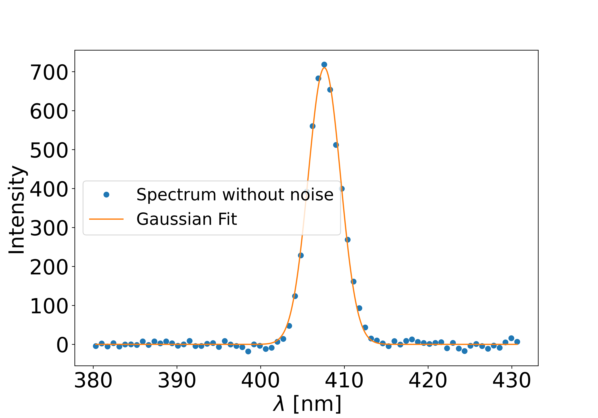

4. Fitting the Gaussian¶
In this page, we explain how to extract the Gaussian intensity from a spectrum. This procedure has been optimized to minimize user choices and make the process as reproducible as possible. Small changes in the procedure’s parameters can lead to variations in the extracted intensity. Therefore, several methods are available: it is up to you to choose the one you prefer, and to document which one you used!
This procedure is explained in Part II of the tutorial_spectra_analysis tutorial.

First, note that the background around your Gaussian is most likely not flat. For example, due to sample fluorescence, a large noise component may appear, making Gaussian intensity extraction more difficult. The first step is therefore to remove this background noise.
Once the background has been removed, the Gaussian intensity can be extracted using different methods: either a curve fit or an integral procedure.
In this page, we assume that the averaged and cleaned spectrum is provided as input (called the y values), along with the wave numbers (called the x values). See Cleaning and Averaging Spectra for more details. Note that the units of the x and y values do not matter, as long as they are consistent and within a reasonable range.
Note
If your curve is Lorentzian, you can still use the noise-removal step. However, you will then need to fit the intensity manually. Contact us if you would like to contribute a new Lorentzian fitting procedure to Alpaga.
4.1. Remove the noise¶

The spectrum is divided into three regions using the x values. The first and last regions are used to define the noise, while the central region should contain the Gaussian peak. The first and last regions must be large enough to be meaningfully fitted with a polynomial function.
If the noise regions are too large, the Gaussian area may not be properly fitted, altering the final intensity.
If the noise regions are too small, the polynomial fit may be meaningless.
A simple way to check this is to add or remove a point from the noise region: the final Gaussian intensity should remain unchanged.
{kind=link}
For the polynomial order used to fit the noise, we recommend 2, 3, or 4. Lower orders are not suitable since the noise is rarely linear. Higher orders may work but can introduce oscillations in the Gaussian region.
- analyze_run.remove_noise(L_x, L_y, l_cut=[380, 395, 419, 433], order_fit_noise=4, return_fit_noise=False, return_boundary=False, show_spectra=False, figure_counter=1)[source]
Remove the noise from a spectrum to make the Gaussian fit easier.
The x-axis is given by L_x and the y-axis by L_y. Using the list l_cut, the spectrum is divided into three areas. The first area is from l_cut[0] to l_cut[1], the second from l_cut[1] to l_cut[2], and the third from l_cut[2] to l_cut[3]. The second area is the target area where the Gaussian is expected. The first and third areas are used to define the noise in the target area using a polynomial fit.
This function first identifies the elements of the x-axis that correspond to the three areas. To obtain these elements, set the optional parameter return_boundary to True. The function will then return the list x_cut, which can be used as follows to define the three areas:
L_y_noise = np.append(L_y[x_cut[0]:x_cut[1]], L_y[x_cut[2]:x_cut[3]]) # first and last areas L_y_target = L_y[x_cut[1]:x_cut[2]] # middle area containing the Gaussian
Next, the first and last areas are fitted using a polynomial of order specified by the optional parameter order_fit_noise. To obtain the fitted noise, set return_fit_noise to True. The function will then return L_y_noise_fit, which contains the polynomial values calculated over all three areas.
Finally, the fitted noise is subtracted from all three areas. The first and last areas should be close to zero, while the middle area should contain a clean Gaussian. If this is not the case, try adjusting the l_cut values to achieve a better noise fit.
To plot the three areas and the polynomial fit, set show_spectra to ‘all’. The initial figure number is given by figure_counter.
The first returned list is L_x_cleaned, the x-axis starting from l_cut[0] to l_cut[3]. The second returned list is L_y_cleaned, the y-values with the noise subtracted, matching the size of L_x_cleaned.
If return_fit_noise is True, the list L_y_noise_fit containing the polynomial fit is returned.
If return_boundary is True, the list x_cut, containing the positions of the l_cut values in the original x-axis, is returned.
In all cases, the last returned value is an integer, the next figure number for plotting, ensuring no conflicts with existing figures.
- Parameters:
L_x (list) – The x-axis used to define the three areas.
L_y (list) – The y-axis from which the noise will be removed.
l_cut (list of float) – [Optional] Defines the three areas based on the values in L_x. Use actual x-values, not indices.
order_fit_noise (int) – [Optional] Polynomial order for fitting the noise. Recommended values are 2, 3, or 4. The order has minimal impact if l_cut is well chosen.
return_fit_noise (bool) – [Optional] If True, returns the noise fitted by a polynomial, L_y_noise_fit.
return_boundary (bool) – [Optional] If True, returns x_cut, containing the element positions for defining the three areas.
show_spectra (str) – [Optional] If ‘all’, plots the areas and polynomial fit.
figure_counter (int) – [Optional] The starting figure number for plots.
- Returns:
L_x_cleaned (list) – The x-axis corresponding to the three areas.
L_y_cleaned (list) – The y-values with noise removed, same length as L_x_cleaned.
L_y_noise_fit (list) – The polynomial-fitted noise, returned if return_fit_noise is True.
x_cut (list) – Positions defining the boundaries of the three areas, returned if return_boundary is True.
figure_counter (int) – The next figure number for plotting.
Examples
See the tutorial for detailed examples. Example outputs depending on optional parameters:
L_x_cleaned, L_y_cleaned, figure_counter = alpaga.remove_noise(L_lambda, L_spectra, l_cut=l_cut, order_fit_noise=order_fit_noise, return_fit_noise=False, return_boundary=False, show_spectra='all', figure_counter=1) L_x_cleaned, L_y_cleaned, L_y_noise_fit, figure_counter = alpaga.remove_noise(L_lambda, L_spectra, l_cut=l_cut, order_fit_noise=order_fit_noise, return_fit_noise=True, return_boundary=False, show_spectra='all', figure_counter=1) L_x_cleaned, L_y_cleaned, x_cut, figure_counter = alpaga.remove_noise(L_lambda, L_spectra, l_cut=l_cut, order_fit_noise=order_fit_noise, return_fit_noise=False, return_boundary=True, show_spectra='all', figure_counter=1) L_x_cleaned, L_y_cleaned, L_y_noise_fit, x_cut, figure_counter = alpaga.remove_noise(L_lambda, L_spectra, l_cut=l_cut, order_fit_noise=order_fit_noise, return_fit_noise=True, return_boundary=True, show_spectra='all', figure_counter=1)
Note: All arguments must be defined prior in the code, see the tutorial.
Note
If noise removal worked correctly, the first and last regions should be flat and close to zero on average. Most importantly, there should be no curvature: otherwise the Gaussian fit below will return incorrect values. If you cannot achieve flat first and last regions, try reducing their size (e.g., set them to 10 nm).

4.2. Gaussian intensity extraction¶
Once the background has been removed, the Gaussian spectrum should be much easier to fit. There are two ways to extract the Gaussian intensity: fitting a Gaussian function or using an integral method.
{kind=link}
Gaussian fit
This method fits the curve with a Gaussian function:
\[f(x) = I_0 \exp \left[ - \left( \frac{ x - \lambda_0}{w_0} \right)^2 \right]\]and returns the intensity \(I_0\), the peak position \(\lambda_0\), and the waist \(w_0\). This function is defined in alpaga.fit_gausse.
Integral method
This method assumes that the peak position and waist are known, and extracts the intensity using the integral:
\[f(x) = I_0 \exp \left[ - \left( \frac{ x - \lambda_0}{w_0} \right)^2 \right] \int_{-\infty}^{+ \infty} f(x) dx = I_0 w_0 \sqrt \pi\]The integral is implemented in alpaga.intensity_from_gaussian_integral, which returns the intensity.

The function alpaga.fit_gausse defines the Gaussian described above. It does not perform the fit itself (see below), but simply returns a Gaussian value for given x and parameters. You can use this function to verify how Gaussian intensity is defined in Alpaga.
- analyze_run.fit_gausse(x, intensity, lambda_0, waist)[source]
Function used to define the Gaussian shape in Alpaga.
y = intensity * np.exp(-((x - lambda_0) / waist) ** 2)
- Parameters:
x (list) – The x values.
intensity (float) – The Gaussian intensity, the parameter targeted by the whole procedure.
lambda_0 (float) – The position of the Gaussian maximum.
waist (float) – The waist of the Gaussian.
- Returns:
y – The computed Gaussian values.
- Return type:
list
The function used to extract the intensity with the integral method is:
- analyze_run.intensity_from_gaussian_integral(L_x_cleaned, L_y_cleaned, lambda_0, waist)[source]
Extract the Gaussian intensity using the integration method. The integral is computed using the numpy.trapz function. The intensity is then given by:
I0 = integral_value / (waist * np.sqrt(np.pi))
Note that in this procedure, no uncertainty calculations are yet implemented.
- Parameters:
L_x_cleaned (list) – The x-axis used to compute the integral. This axis should contain at least the Gaussian peak.
L_y_cleaned (list) – The y-axis used to compute the integral. Usually, this is the output obtained from the alpaga.remove_noise function. Apart from the Gaussian curve, the other values should be as close to zero as possible. Since the integration is performed over the entire list, non-zero values may affect the final intensity if their average is not zero.
lambda_0 (float) – Unused. This input is kept only for consistency with other methods.
waist (float) – The waist of the Gaussian, used to extract the Gaussian intensity from the integral value.
- Returns:
I0 – The computed Gaussian intensity.
- Return type:
float
The Gaussian fit method is more versatile: it provides not only the intensity but also the waist and peak position. However, because it relies on fitting the entire curve, it can be less accurate when the signal is weak.
The integral method, on the other hand, is often more robust for intensity extraction, but it requires prior knowledge of the waist. For well-behaved Gaussian curves, both methods yield the same result. Since it is unclear which method is most precise, both are always available.
The Gaussian intensity extraction function also relies on alpaga.remove_noise to remove the background. If your curve is already noise-free, this step should not be a problem.
- analyze_run.fit_gaussian_from_noise(L_x, L_y, l_cut=[380, 395, 419, 433], order_fit_noise=4, method_fit='fit_gauss', bounds_fit_gausse=([0, 395, 1], [inf, 410, 25]), lambda_0_ref=403, waist_ref=2, exclu_zone=False, fit_noise=False, show_spectra='all', figure_counter=1)[source]
This function returns the intensity I0, the maximum position lambda_0, and the width waist of the Gaussian in L_y. The procedure first removes the noise using alpaga.remove_noise function, and then extracts the intensity. Two methods are available to extract the intensity:
If method_fit is set to ‘fit_gauss’:
The intensity is extracted using scipy.optimize.curve_fit:
p, q = curve_fit(fit_gausse, L_x_cleaned, L_y_cleaned, bounds=bounds_fit_gausse) I0, lambda_0, waist = p[0], p[1], p[2]
Here, fit_gausse is defined in the analyze_run.fit_gausse function. The x and y inputs are the outputs of the cleaning procedure (see analyze_run.remove_noise function), and the bounds are given by the bounds_fit_gausse parameter. This method returns the Gaussian intensity I0, the central wavelength lambda_0, and the width waist. This approach is the most versatile and should generally be used first to characterize your experimental laser conditions (lambda_0 and waist).
If method_fit is set to ‘fit_gauss_w_exclu’:
Same method as above, but with an exclusion zone (for example, if a Hyper Raman band is close to the SHG signal). You must specify the exclusion zone with exclu_zone = [X_min, X_max].
If method_fit is set to ‘integral_gauss’:
The intensity is extracted using analyze_run.intensity_from_gaussian_integral:
I0 = intensity_from_gaussian_integral(L_x_cleaned, L_y_cleaned, lambda_0, waist)
Here, lambda_0 and waist are set by the parameters lambda_0_ref and waist_ref. Note that lambda_0_ref does not affect the result (I0); it is only used for plotting.
- Parameters:
L_x (list) – The x-axis data, used for noise removal and fitting.
L_y (list) – The y-axis data where the Gaussian intensity should be extracted.
l_cut (list of float) – [Optional] Parameters used for noise removal (see alpaga.remove_noise function).
order_fit_noise (int) – [Optional] Order of the polynomial used for noise removal.
method_fit (str) – [Optional] The method used to extract the intensity once noise is removed.
bounds_fit_gausse (list) – [Optional] Bounds for the free parameters in the ‘fit_gauss’ method. Narrowing the parameter ranges avoids problems with low Gaussian intensity, where the fit may increase the width instead of decreasing I0. Example: to restrict lambda_0 between 401 and 405, and waist between 2 and 3, use bounds_fit_gausse = ([0, 401, 1], [np.inf, 405, 3]). See scipy.optimize.curve_fit documentation for more details.
lambda_0_ref (float) – [Optional] Reference value of lambda_0 for the ‘integral_gauss’ method. This has no impact on the result but affects plotting.
waist_ref (float) – [Optional] Reference value of waist for the ‘integral_gauss’ method. This has a direct impact on I0. Choose carefully (see Polarisation Procedure).
exclu_zone (list of float) – [Optional] Pair of floats defining the exclusion zone for ‘fit_gauss_w_exclu’.
show_spectra (str) – [Optional] If ‘all’, plots figures to check results. Otherwise, no figures are shown.
figure_counter (int) – [Optional] The number assigned to the first figure.
- Returns:
L_para_gauss (list) – Gaussian parameters [I0, lambda_0, waist]. I0: Gaussian intensity lambda_0: central wavelength waist: Gaussian width
L_err (list) – Associated errors [err_I0, err_lambda_0, err_waist]. No errors are defined for the ‘integral_gauss’ method; in this case, the error list contains zeros.
figure_counter (int) – Updated figure counter for subsequent plots.
Examples
See the tutorial for detailed examples. A minimal workflow is:
# Define the directory where the data are stored directory = os.path.join(WORK_DIR, 'Eau_V_Spectres') # Extract Alpaga parameters describing the dataset prefix_file, L_files_angles, N_iter, extension = alpaga.find_angle_iter_from_dir(directory) # Select one acquisition names = os.path.join(directory, prefix_file) + '_' + L_files_angles[0] # Clean the acquisition from spikes and average it over N_iter L_lambda, L_spectra, _ = alpaga.averaging_and_cleaning( names, N_iter, extension='.dat', type_cleaning='mean', L_mean_cleaning_n=[1, 1, 1, 3], L_mean_cleaning_evo_max=[2, 1.5, 1.3, 1.3], show_spectra=False, figure_counter=1 ) # Remove noise and extract Gaussian parameters intensity, lambda_0, omega, figure_counter = Alpaga.analyze_run.fit_gaussian_from_noise( L_lambda, L_spectra, l_cut=[380, 399, 414, 431], order_fit_noise=4, bounds_fit_gausse=([0, 395, 1], [np.inf, 410, 25]), show_spectra='all' ) print(intensity, lambda_0, omega)
4.3. Towards automation¶

Extracting intensity from averaged spectra is perhaps the step where numerical parameters most strongly influence the results. Therefore, we recommend:
Testing several parameters to see which best fit your data (some samples are easier to fit than others).
Using the same parameters consistently for all acquisitions.
The fully automated procedure is presented in Polarisation Procedure. It combines the approaches described in File Management, Cleaning and Averaging Spectra, and this page.
- Release:
1.2
- Date:
Aug 24, 2025